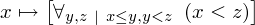
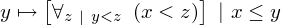
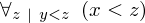

Theorem transitivityLessEqLess of type Forall¶
from context proveit.number.ordering¶
see dependencies
In [1]:
# import the special expression
from proveit.number.ordering._theorems_ import transitivityLessEqLess
In [2]:
# check that the built expression is the same as the stored expression
%check_expr transitivityLessEqLess
In [3]:
# display the expression information
transitivityLessEqLess.exprInfo()
Out[3]:
| core type | sub-expressions | expression | |
|---|---|---|---|
| 0 | Operation | operator: 6 operand: 1 |  |
| 1 | Lambda | parameter: 15 body: 2 |  |
| 2 | Operation | operator: 6 operand: 3 |  |
| 3 | Lambda | parameter: 18 body: 4 conditions: 5 |  |
| 4 | Operation | operator: 6 operand: 7 |  |
| 5 | ExprList | 8 |  |
| 6 | Literal |  | |
| 7 | Lambda | parameter: 19 body: 9 conditions: 10 |  |
| 8 | Operation | operator: 11 operands: 12 |  |
| 9 | Operation | operator: 16 operands: 13 |  |
| 10 | ExprList | 14 |  |
| 11 | Literal |  | |
| 12 | ExprList | 15, 18 |  |
| 13 | ExprList | 15, 19 |  |
| 14 | Operation | operator: 16 operands: 17 |  |
| 15 | Variable |  | |
| 16 | Literal |  | |
| 17 | ExprList | 18, 19 |  |
| 18 | Variable |  | |
| 19 | Variable |  |